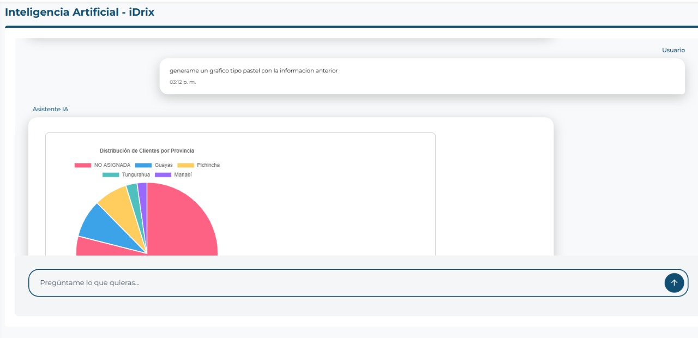
MCP Server
MCP Financial Management Server for Idrix Technology: Comprehensive system developed with FastMCP specifically designed to efficiently and automatically manage business finances. The server provides specialized tools for product, customer, and sales management, enabling complete financial control through data processing in Excel and CSV formats, automatic generation of professional reports in Word and LaTeX, and visualization of financial metrics through dynamic charts.
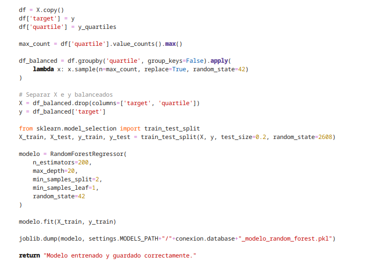
Python Machine Learning APIs
AI Prediction API for Idrix Technology: FastAPI-based machine learning system implementing clean architecture with dependency injection for scalable financial predictions and model training. The application features a modular design using the Container pattern for efficient dependency management, providing RESTful endpoints for real-time predictions and model training operations.
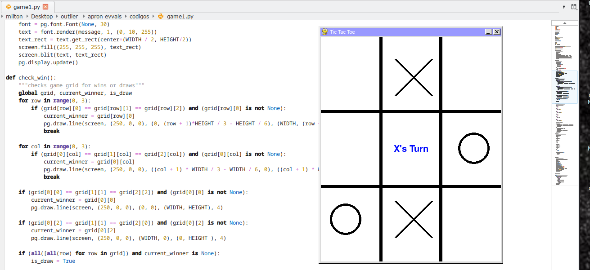
Outlier AI - Newton Buffet Project
Quality assurance project focused on stress-testing Large Language Models' ability to generate complex 2D/3D physics simulations and interactive code artifacts. Developed challenging prompts designed to expose model failures in dynamic physics environments, then systematically identified, categorized, and documented errors including runtime crashes, performance issues, visual bugs, and simulation logic flaws. Created comprehensive golden solutions by rewriting failed responses into flawless, production-ready code. This iterative workflow (prompt creation, model evaluation, failure annotation, response rewriting, and video documentation) ensures continuous improvement in LLM code generation capabilities for physics-based applications.
Technologies: Game Creation, Physics Simulations, 2D/3D Graphics, JavaScript/Python, Error Classification, Code Quality Assurance
Key Contributions: Adversarial prompt design, systematic error categorization, golden solution development, quality benchmarking

Outlier AI - Antchamber Project
LLM System Prompt Engineering & Tool Execution Optimization: Advanced project focused on designing, testing, and refining Large Language Model behavior through comprehensive system prompt engineering and MCP server tool execution validation. The initiative encompasses three core objectives: creating robust system prompts that define the model's personality, operational rules, and contextual boundaries; building interactive conversations to ensure response alignment with established guidelines; and implementing rigorous error identification and correction protocols with emphasis on optimal user experience. This project specifically addresses critical areas including accurate tool execution within MCP server environments, response consistency, and behavioral refinement across multiple domains, ensuring the LLM maintains reliability and precision in complex operational scenarios.
Technologies: LLM Engineering, MCP Server, Prompt Engineering, System Design, Quality Assurance
Key Contributions: System prompt architecture, conversation flow design, error correction protocols, tool execution validation

Outlier AI - World Tools Quest Project
Innovative reinforcement learning project designed to enhance Large Language Model performance in MCP (Model Context Protocol) tool-calling tasks through Reinforcement Learning with Verifiable Rewards (RLVR). Implements a sophisticated rubric-based reward system that provides detailed, multi-dimensional feedback for complex, multi-step reasoning processes. The system enables precise evaluation and improvement of the model's tool execution capabilities, combining structured feedback loops with verifiable reward signals to optimize decision-making patterns when interacting with external tools and APIs. This approach significantly improves accuracy, consistency, and reasoning quality in complex MCP server environments where traditional training methods fall short.
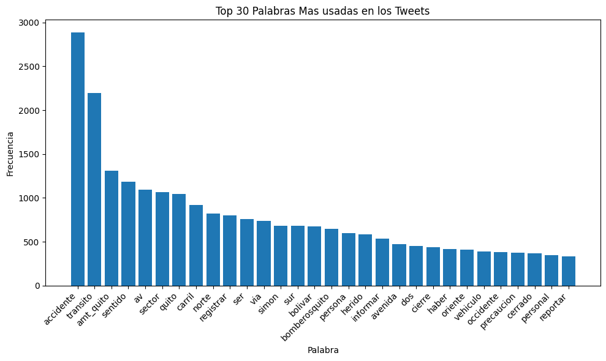
Analysis of Streets with High Accident Rates in Quito, Ecuador
Comprehensive data analysis project focused on identifying and evaluating the streets with the highest incidence of traffic accidents in Quito. The project utilizes Twitter as the primary data source, implementing natural language processing and sentiment analysis to extract accident-related information from social media posts. Through detailed statistical visualizations and interactive charts, the analysis examines the proportions of fatalities and injuries across different locations, while identifying the most frequently used keywords and phrases in accident descriptions. The project combines geospatial mapping with data visualization to pinpoint critical road safety zones, providing actionable insights for urban planning authorities and traffic management systems to develop targeted accident prevention strategies and improve public safety measures in high-risk areas.
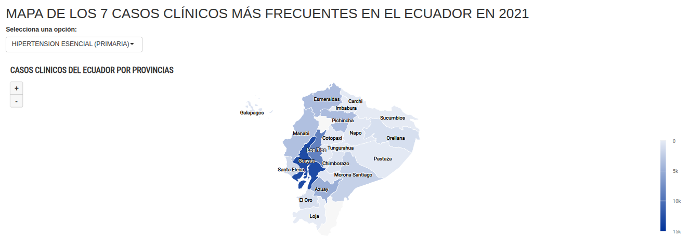
Analysis and Representation of Data from the Ministry of Health in Ecuador
The project was part of a research contest at the Universidad Politécnica Salesiana in Ecuador and focused on the analysis and representation of data from the Ministry of Health in Ecuador, centering on the 7 most common clinical data points. The main goal was to raise awareness about the state of health in the country to inform and prevent future issues. To achieve this, techniques such as creating maps were used to show the geographic distribution of cases by province, highlighting those with the highest frequency. In addition, diseases and their causes were detailed to provide a deeper understanding of the situation. The project was developed in R Studio, leveraging its capabilities to handle large datasets, as it included over a million records. Specialized libraries for data analysis and visualization were used, allowing for a clear and effective representation of the information obtained from the Ministry of Health.
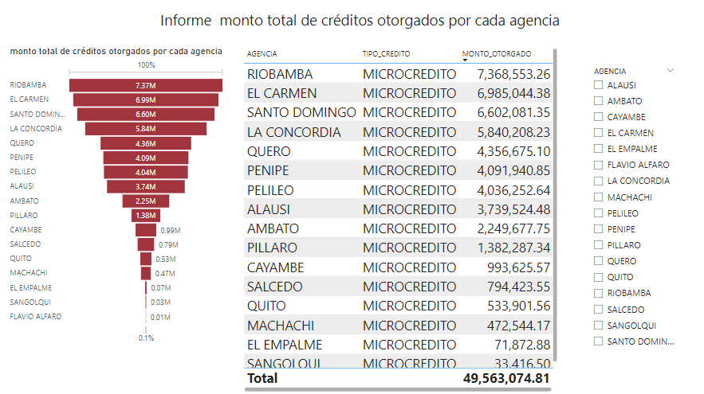
Insurance and Financial Data Analysis Dashboard for Idrix Technology
Comprehensive Power BI analytics solution designed to perform in-depth analysis of insurance amounts, loans, poverty levels, and customer segmentation for strategic business intelligence. The project delivers interactive dashboards that visualize client status across multiple financial dimensions, enabling data-driven decision-making and optimized resource allocation. Features dynamic visualizations including bar charts, line graphs, pie charts, and geospatial maps with custom filtering capabilities for tailored analysis by geographic location, income ranges, and customer types. The platform facilitates exploration of correlations between key financial variables and identification of behavioral trends in client interactions with financial products. This analytical tool empowers Idrix Technology to enhance client management strategies, improve risk assessment accuracy, and optimize business operations through actionable insights derived from comprehensive financial data analysis.
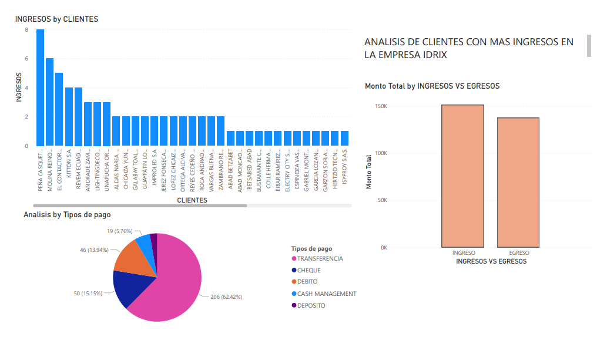
Real-Time Financial Analysis Dashboard for IDRIX Company
Comprehensive Power BI analytics solution with live MySQL database integration designed to deliver real-time financial intelligence and business performance monitoring. The dashboard features interactive visualizations including client revenue analysis through dynamic bar charts identifying top revenue contributors, comparative income versus expense metrics displaying financial health (~150K income vs ~125K expenses), and detailed payment method distribution breakdowns via pie charts showing transaction preferences with bank transfers dominating at 62.42%, followed by checks (15.15%) and debit cards (13.94%). This analytical platform enables continuous monitoring of key financial indicators, facilitating data-driven decision-making for optimizing client relationships, improving cash flow management, and enhancing operational efficiency. The real-time data connectivity ensures stakeholders have immediate access to current business metrics, empowering IDRIX management to identify revenue patterns, track payment behaviors, assess profitability margins, and implement strategic initiatives that drive business growth and financial optimization across the organization.

IoT Sensor Dashboard with Raspberry Pi 4 & AWS
Cloud-connected IoT monitoring system developed for Universidad Politécnica Salesiana that integrates a Raspberry Pi 4 with environmental sensors (temperature, humidity, distance) to collect and transmit real-time data to an AWS-hosted dashboard. Built with Node.js backend deployed on Elastic Beanstalk, the application features secure user authentication via AWS Cognito, real-time data visualization, and scalable cloud infrastructure for sensor performance analysis and testing, demonstrating the seamless integration of edge IoT devices with enterprise-grade cloud services.
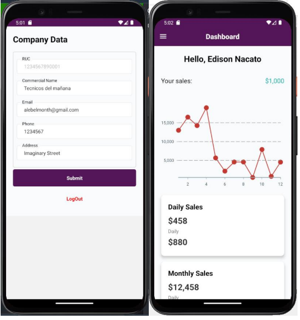
AI-Powered Invoice Software for Ecuadorian Microbusinesses
Cloud-native invoice management system designed specifically for microbusinesses in Ecuador, leveraging artificial intelligence and AWS microservices architecture to automate and streamline billing processes. The application integrates machine learning capabilities for intelligent data extraction, document processing, and financial analytics, while utilizing cloud microservices for scalability, reliability, and cost-effectiveness. Published research available through Universidad Politécnica Salesiana's institutional repository, demonstrating practical application of AI and cloud computing to address real-world business challenges in emerging markets.
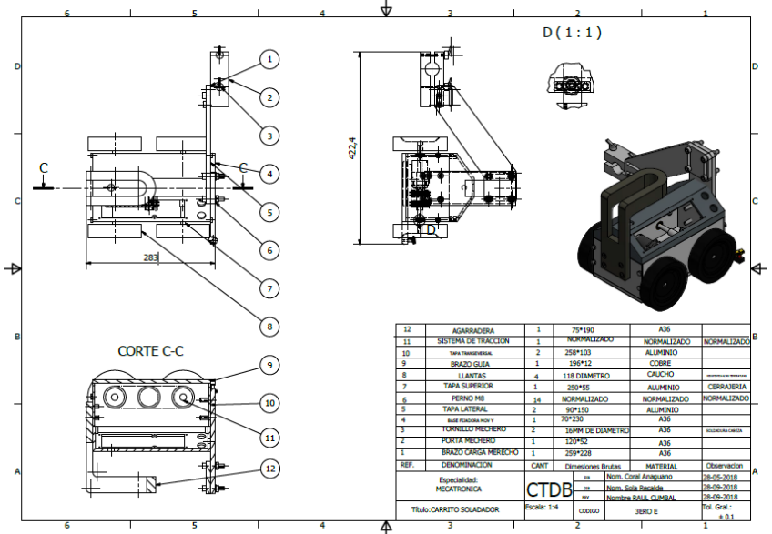
Automated Welding System with PIC Microcontroller (C Programming)
Industrial automation prototype programmed in C for precision welding of beams and large metal structures, developed as an educational platform for Technical Salesian "Don Bosco" High School students to learn embedded systems and industrial automation. The system utilizes a PIC 16F877A microcontroller with Bluetooth and Serial communication capabilities for flexible programming and remote control, featuring multiple safety control modes to protect operators from welding contamination and electric arc exposure. Built with steel and aluminum components and employing standardized traction systems for cost-effective maintenance, the prototype implements short circuit welding techniques for optimal performance during extended industrial operations, with user-controlled speed regulation and welding time monitoring through an integrated control interface, demonstrating practical applications of embedded C programming, motor control, wireless communication protocols, and industrial safety systems in automated manufacturing processes.
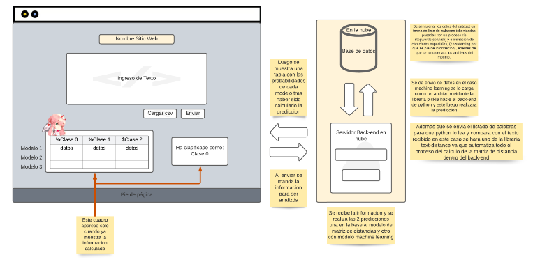
Offensive Language Classifier with NLP & Machine Learning
Flask-based web application that leverages Natural Language Processing and multiple machine learning algorithms to classify text as offensive or non-offensive in real-time. The system implements three complementary classification approaches—Naive Bayes for probabilistic text analysis, neural networks for deep pattern recognition, and distance matrices for semantic similarity measurement—providing robust and accurate content moderation capabilities. Features an interactive web interface that allows users to submit text and instantly receive classification results, demonstrating practical applications of NLP and ensemble machine learning techniques for automated content filtering and moderation.
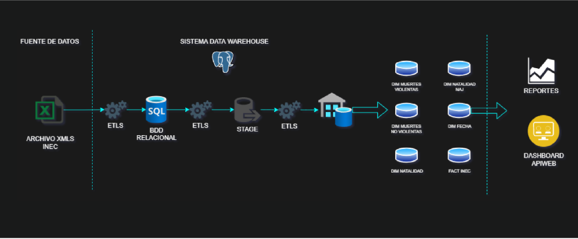
Full-Stack Data Warehouse & Business Intelligence Platform
Enterprise-grade data warehouse solution built with a three-tier architecture featuring a Bootstrap front-end, Node.js RESTful API backend, and PostgreSQL multidimensional database for advanced business intelligence and decision-making support. The application implements two core modules: a Maintenance system for complete CRUD operations on warehouse data, and a comprehensive Reports dashboard with interactive statistical visualizations using Highcharts, dynamic filtering capabilities, and multi-format export functionality (Excel, PDF) via Datatables. Demonstrates full-stack development proficiency, RESTful API design, multidimensional data modeling, and practical implementation of business intelligence concepts for real-world analytical reporting and data-driven decision support systems.